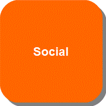

<!DOCTYPE html>

<html>
  
   <head>
     
      <meta http-equiv="Content-Type" content="text/html" charset="utf-8" lang="en">
      <meta name="viewport" content="width=device-width, initial-scale=1.0, maximum-scale=1.0, user-scalable=0;">   
      <title>Notification System Widget v1.0</title>
 
      <link rel="shortcut icon" href="img/favicon.gif"/>   
      <link rel="stylesheet" href="css/base.css" media="screen"/>
    
      <script src="https://cdnjs.cloudflare.com/ajax/libs/react/0.14.7/react.js"></script>
    
      <script src="https://cdnjs.cloudflare.com/ajax/libs/react/0.14.7/react-dom.js"></script>
      <script src="https://cdnjs.cloudflare.com/ajax/libs/react/0.14.7/react-with-addons.js"></script>
    
      <script src="https://cdnjs.cloudflare.com/ajax/libs/babel-core/5.6.15/browser.js"></script>
    
      <script src="https://cdnjs.cloudflare.com/ajax/libs/jquery/2.2.0/jquery.min.js"></script>
    
      <script src="https://cdnjs.cloudflare.com/ajax/libs/marked/0.3.5/marked.min.js"></script>

      <script src="https://cdnjs.cloudflare.com/ajax/libs/favico.js/0.3.4/favico.js"></script>  
   </head>
  
   <body>
    
      <div id="content"></div>
    
    
      <script type="text/babel">
      // Notification System Widget v1.0
      // The approach taken is the top-down where the components higher up in the hierarchy are built first starting with the main component.  
      // Some methods are passed in a JavaScript object to React.createClass() to create a new React component.
      // The key method called render returns a tree of React components that will eventually render to HTML.
      // The <div> tags are not actual DOM nodes and are instantiations of React div components so React sees them as meaningful markers or pieces of data. 
      // HTML strings are not generated so Cross Site Scripting (XSS) protection is the default.
      
      // Main Component (Notification Widget)
      // Sets the props of the sub-components. 
      var NotificationWidget = React.createClass({
         loadNotificationsFromServer: function() {
              $.ajax({
                 url: this.props.url,
                 dataType: 'json',
                 cache: false,
                 success: function(data) {
                    // Stores attributes of notification data in the state. Functions modify the state triggered by UI events.
                    this.setState({data: data});
                 }.bind(this),
                 error: function(xhr, status, err) {
                    console.error(this.props.url, status, err.toString());
                 }.bind(this)
              });
              $(document).ready(function() {
                     // A value is assigned since there is no actual fetching of notification data from the server at the moment.
                     // <NotificationCount count={this.state.count}/> will be rendered with the other sub-components when users are logged into respective accounts. 
                     // Notice the value at the title of the browser tab.
                     var count = 5;
                     var favicon = new Favico({
                           position  :'up',
                           animation :'popFade',
                           bgColor   :'#dd2c00',
                           textColor :'#fff0e2'  
                     });
                     // Initial value.
                     favicon.badge(count);
              });
          },
          // Retrieves notification data from the server when users are logged into respective accounts.
          handleNotificationUpdate: function(notification) {
              var notifications = this.state.data;
              notification.id = Date.now();
              var newNotifications = notifications.concat([notification]);
              this.setState({data: newNotifications});
              $.ajax({
                 url: this.props.url,
                 dataType: 'json',
                 type: 'GET',
                 data: notification,
                 success: function(data) {
                    this.setState({data: data});
                 }.bind(this),
                 error: function(xhr, status, err) {
                    // Updated value triggered by UI events.
                    this.setState({data: notifications});
                    console.error(this.props.url, status, err.toString());
                 }.bind(this)
              });
          },     
         // Executes exactly once during the lifecycle of the component and sets up the initial state of the component.
         getInitialState: function() {
             return {data: []};
          },
          // Called automatically by React after a component is rendered for the first time.
          componentDidMount: function() {
             this.loadNotificationsFromServer();
             setInterval(this.loadNotificationsFromServer, this.props.pollInterval); 
         },
         // The retrieved notifications will be reflected on each of the pages 
         // containing a list of notifications (e.g. MessagePage data={this.state.data}) 
         // upon clicking on the respective notification icons (e.g. MessageList pagename={this.props.pagename}) when users are logged into respective accounts. 
         render: function() {
            return (
               <div className="notificationWidget">
                   <h1>Notifications</h1>
                   <HelloWorld date={new Date()} />
                   <MessageList pagename={this.props.pagename}/>
                   <MessagePage data={this.state.data}/>
                   <StatusList pagename={this.props.pagename}/>
                   <StatusPage data={this.state.data}/>
                   <SocialList pagename={this.props.pagename}/>
                   <SocialPage data={this.state.data}/>
                   <UpdateList pagename={this.props.pagename}/>
                   <UpdatePage data={this.state.data}/>
               </div>
            );
         }
      });
      // Sub-Component (Hello World)
      // Welcomes a user (host or guest) with the current date and time (time zone) when logged into respective accounts. 
      var HelloWorld = React.createClass({
          render: function() {
             return ( 
                <div>
                    Hello {this.props.user}!
                    It is {this.props.date.toDateString()} {this.props.date.toTimeString()}.
                    What's up?
                </div>
             );
          }
      });
      // Sub-Component (Notification Count)
      // Displays the total number of unread notifications for each user.       
      // Fetching of notification data from the server occurs when user login is incorporated.<NotificationCount count={this.state.count}/>
      // This sub-component will only be implemented when the type of users (Host and Guest) and the type of notifications (Message, Status, Social, Update) are incorporated in the database.    
      //var NotificationCount =  React.createClass({
      //    componentDidMount: function() {
      //       Notification.addChangeListener(this.onChange);
      //    },
      //   componentWillUnmount: function() {
      //      Notification.removeChangeListener(this.onChange);
      //   },
      //   onChange: function() {
      //       var newState = getInitialState();
      //       if (!utils.areStatesEqual(newState, this.state)) {
      //          this.setState(newState);
      //       }
      //   },
      //     getInitialState: function() {
      //        var count = 0;
      //        // Type of notifications not defined yet. 
      //        var notifications;
      //        // Type of users not defined yet.
      //        var users;
      //        
      //        notifications.forEach(function(notification) {
      //            var notificationUser = users[notification.id];
      //            // if-then-else statements to be incorporated here based on the type of users and the type of notifications.
      //            // Each type of notification will be added and a total of all notifications will result.
      //        });    
      //        return {count: count}
      //     },
      //   render: function() {
      //      if (this.state.count == 0) {
      //         return (<span></span>);
      //      }
      //      else {
      //         return (<span className="badge-count">{this.state.count}</span>);
      //      }
      //   }
      //});   
      // The data {this.state.data} will look something like below in the server based on the notifications.json file and
      // will be reflected on pages containing all the messages, status changed, social activities, and general updates 
      // of each respective user when logged into a host or guest account.  
      var data = [
         {"id": 1388534400000,
        "user": "Edith Johnson",
        "unread": true,       "desc": "Hey there!"},
         {"id": 1420070400000,
        "user": "Anne Smith",
        "unread": true,        "desc": "Hello!"}
      ];
      // Sub-Component (Message List)
      // Gets notification data via props to component.
      // To display the message notification icon of a user when logged into a host or guest account. 
      var MessageList = React.createClass({
         render: function() {
            return (
               <div className="messageList">
                   <a href={'http://localhost:3000/messagepage.html'}>
                   {this.props.pagename}
                   </a>{/*This simulates the notifications update at the title of the page of unread messages.*/}
                   
                   {/*<a href={'http://cookiesncream.github.io/Simply-Me/index.html' + this.props.pagename}>
                   {this.props.pagename}
                   </a> - Use this when user login is incorporated to navigate to the page containing a list of message notifications for a user.*/}
               </div>              
            );
         }
      });
      // Sub-Component (Status List)
      // Gets notification data via props to component.
      // To display the status notification icon of a user when logged into a host or guest account.
      var StatusList = React.createClass({
         render: function() {
            return (
               <div className="statusList">
                   <a href={'http://localhost:3000/statuspage.html'}>
                   {this.props.pagename}
                   </a>{/*This simulates the notifications update at the title of the page of unread status changed.*/}

	     {/*<a href={'http://cookiesncream.github.io/Simply-Me/index.html' + this.props.pagename}>
                   {this.props.pagename}
                   </a> - Use this when user login is incorporated to navigate to the page containing a list of status notifications for a user.*/}
               </div>
            );
         }
      });
      // Sub-Component (Social List)
      // Gets notification data via props to component.
      // To display the social notification icon of a user when logged into a host or guest account. 
       var SocialList = React.createClass({
         render: function() {
            return (
               <div className="socialList">
                   <a href={'http://localhost:3000/socialpage.html'}>
                   {this.props.pagename}
                   </a>{/*This simulates the notifications update at the title of the page of unread social activities.*/}

                   {/*<a href={'http://cookiesncream.github.io/Simply-Me/index.html' + this.props.pagename}>
                   {this.props.pagename}
                   </a> - Use this when user login is incorporated to navigate to the page containing a list of social notifications for a user.*/}
               </div>
            );
         }
      });
      // Sub-Component (Update List)
      // Gets notification data via props to component.
      // To display the update notification icon of a user when logged into a host or guest account.
      var UpdateList = React.createClass({
         render: function() {
            return (
               <div className="updateList">
                   <a href={'http://localhost:3000/updatepage.html'}>
                   {this.props.pagename}
                   </a>{/*This simulates the notifications update at the title of the page of unread general updates.*/}

                   {/*<a href={'http://cookiesncream.github.io/Simply-Me/index.html' + this.props.pagename}>
                   {this.props.pagename}
                   </a> - Use this when user login is incorporated to navigate to the page containing a list of update notifications for a user.*/}
               </div>
            );
         }
      });
      // Sub-Component (Message Page)
      // Gets notification data via props to component.
      // To separate the page containing all the messages of a user when logged into a host or guest account.
       var MessagePage = React.createClass({
          render: function() {
             var notificationNodes = this.props.data.map(function(notification) {
                  return (
                     <Notification user={notification.user} key={notification.id}>
                         {notification.unread}
                         {notification.desc}
                     </Notification>
                  );
             });
             return (
               <div className="messagePage">
                   {notificationNodes}
               </div>              
            );
         }
      });
      // Sub-Component (Status Page)
      // Gets notification data via props to component.
      // To separate the page containing all the status changed for a user when logged into a host or guest account.
       var StatusPage = React.createClass({
          render: function() {
             var notificationNodes = this.props.data.map(function(notification) {
                  return (
                     <Notification user={notification.user} key={notification.id}>
                         {notification.unread}
                         {notification.desc}
                     </Notification>
                  );
             });
             return (
               <div className="statusPage">
                   {notificationNodes}
               </div>              
            );
         }
      });
      // Sub-Component (Social Page)
      // Gets notification data via props to component.
      // To separate the page containing all the social activities of a user when logged into a host or guest account.
      var SocialPage = React.createClass({
          render: function() {
             var notificationNodes = this.props.data.map(function(notification) {
                  return (
                     <Notification user={notification.user} key={notification.id}>
                         {notification.unread}
                         {notification.desc}
                     </Notification>
                  );
             });
             return (
               <div className="socialPage">
                   {notificationNodes}
               </div>              
            );
         }
      });
      // Sub-Component (Update Page)
      // Gets notification data via props to component.
      // To separate the page containing all the general updates for a user when logged into a host or guest account.
      var UpdatePage = React.createClass({
          render: function() {
             var notificationNodes = this.props.data.map(function(notification) {
                  return (
                     <Notification user={notification.user} key={notification.id}>
                         {notification.unread}
                         {notification.desc}
                     </Notification>
                  );
             });
             return (
               <div className="updatePage">
                   {notificationNodes}
               </div>              
            );
         }
      });
      // Sub-Component (Notification)
      // Gets notification data via props to component.
      // To display the pages containing all the messages, status changed, social activities, and general updates of each respective user when logged into a host or guest account.
      var Notification = React.createClass({
          render: function() {
             return (
                <div className="notification">
                    <h2 className="notificationUser">
                        {this.props.user}
                    </h2>
                    {this.props.children}
                </div>
             );
          }
       });
      // ReactDOM.render() instantiates the root component, starts the framework, and injects the markup into a raw DOM element, provided as the second argument.
      // ReactDOM.render is located at the bottom of the script after the sub-components are defined. 
      // Notification data is fetched from the server via the API.
      // Changes will show when the main component (Notification Widget) is first loaded and every 2 seconds after that. 
      // The ReactDOM module reveals the DOM-specific methods (getElementById), while React has the core tools shared by React on different platforms 
      // (React Native: where standard components such as UITabBar on iOS and Drawer on Android can be used following the same Notification Widget logic in React).
      setInterval(function() {
         ReactDOM.render(
             <NotificationWidget url="/api/notifications" pollInterval={2000} />,
             document.getElementById('content')
         );
      }, 500);
      </script>
   </body>

</html>
